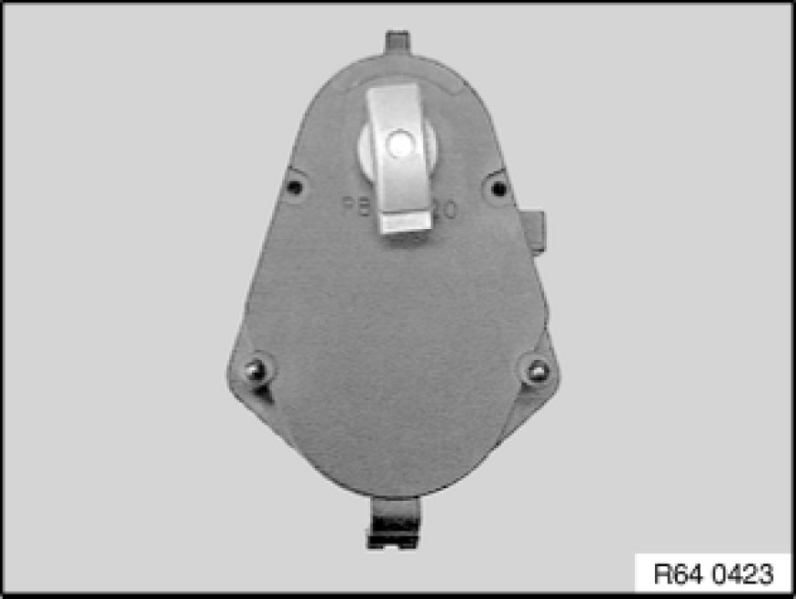

Operation CHARM
: Car repair manuals for everyone.
Home
>>
BMW
>>
2007
>>
X3 3.0si (E83) L6-3.0L (N52K)
>>
Repair and Diagnosis
>>
Heating and Air Conditioning
>>
Air Door
>>
Air Door Actuator / Motor
>>
Service and Repair
>>
Installing Servodrive
Installing Servodrive
64 11 ... - Installing servodrive

Installation:
If necessary, align shaft of flap(s) to be actuated to position of servodrive to be installed.